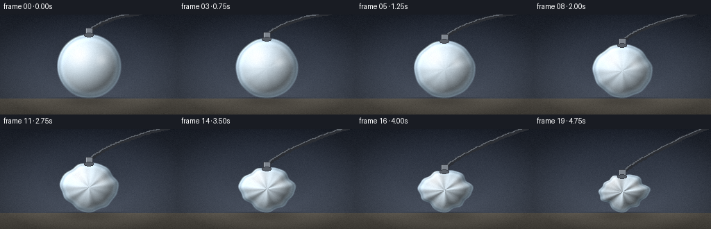
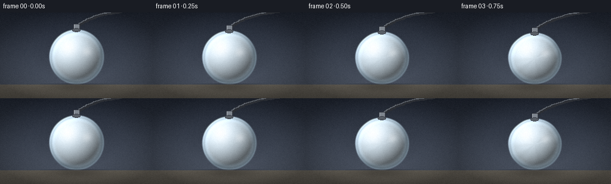

CODING AGENTS AS PIXEL WORLD MODELS
traex/Seed-2.1-Pro-0915 · phygen_018
点击播放 · 原生 RGB 像素
逐轮保存的候选
回放视频、检查图与代码变化。
每份候选均可单独播放。实际图片检查记录在下方工具轨迹中。
候选 01播放与检查图
点击播放 · 原生 RGB 像素


展开代码变化
--- 上一保存版本
+++ 本次保存版本
@@ -0,0 +1,210 @@
+"""Procedural timelapse: air extracted from a sealed empty plastic ball.
+
+The ball is rendered as an implicit radial surface (so dents and wrinkles stay
+smooth and properly shaded), with a fixed suction hose and nozzle attached at
+the top. Everything is pure numpy/PIL math, no external assets.
+"""
+import json
+from pathlib import Path
+
+import numpy as np
+from PIL import Image, ImageDraw
+
+import artifact_io
+
+CASE_DIR = Path(__file__).parent
+SPEC = json.loads((CASE_DIR / "task_spec.json").read_text())
+W, H, N, FPS = SPEC["width"], SPEC["height"], SPEC["frames"], SPEC["fps"]
+
+FLOOR_Y = 120.0
+R0 = 46.0
+CX = 128.0
+
+# (angle, angular width, onset time, depth) of localized buckling dents
+DENTS = [
+ (2.35, 0.32, 0.22, 0.16),
+ (0.55, 0.28, 0.38, 0.14),
+ (-1.65, 0.34, 0.52, 0.17),
+ (3.55, 0.30, 0.66, 0.13),
+ (-2.85, 0.26, 0.78, 0.12),
+]
+
+
+def wrinkle(theta, t):
+ """Radial displacement factor W(theta, t); negative values are dents."""
+ amp = t ** 1.5
+ w = amp * (
+ 0.055 * np.sin(4.0 * theta + 0.8)
+ + 0.045 * np.sin(7.0 * theta + 2.3)
+ + 0.030 * np.sin(11.0 * theta + 4.1)
+ )
+ for ang, sigma, onset, depth in DENTS:
+ grow = np.clip((t - onset) / max(1e-6, 1.0 - onset), 0.0, 1.0) ** 1.2
+ delta = np.arctan2(np.sin(theta - ang), np.cos(theta - ang))
+ w -= depth * grow * np.exp(-(delta ** 2) / (2 * sigma ** 2))
+ return w
+
+
+def shape_factor(theta, t):
+ return np.clip(1.0 + wrinkle(theta, t), 0.58, 1.08)
+
+
+def smoothstep(a, b, x):
+ u = np.clip((x - a) / (b - a), 0.0, 1.0)
+ return u * u * (3.0 - 2.0 * u)
+
+
+def make_background(grain):
+ yy, xx = np.mgrid[0:H, 0:W].astype(np.float32)
+ fy = yy / (H - 1)
+ top = np.array([33.0, 39.0, 51.0])
+ bottom = np.array([80.0, 88.0, 102.0])
+ bg = top[None, None, :] * (1 - fy[..., None]) + bottom[None, None, :] * fy[..., None]
+
+ # Floor: a quiet matte surface below the horizon.
+ floor_t = np.clip((yy - FLOOR_Y) / (H - FLOOR_Y), 0.0, 1.0)
+ floor_col = np.array([104.0, 99.0, 90.0]) * (1.0 - 0.22 * floor_t[..., None])
+ bg = np.where(yy[..., None] > FLOOR_Y, floor_col, bg)
+
+ # Soft vignette so the eye stays on the ball.
+ vx = (xx - W / 2) / (W / 2)
+ vy = (yy - H / 2) / (H / 2)
+ vignette = 1.0 - 0.28 * np.clip(vx ** 2 + vy ** 2 - 0.35, 0.0, 1.0)
+ bg *= vignette[..., None]
+ return np.clip(bg + grain, 0, 255)
+
+
+def render_frame(t, grain, bg_base):
+ frame = bg_base.copy()
+
+ sx = 1.0 - 0.17 * t # gentle horizontal shrink
+ sy = 1.0 - 0.40 * t # strong vertical collapse under gravity
+
+ # Keep the lowest point of the shell on the floor.
+ s_bottom = float(shape_factor(np.pi / 2, t))
+ cy = FLOOR_Y - R0 * sy * s_bottom
+ s_top = float(shape_factor(-np.pi / 2, t))
+ top_y = cy - R0 * sy * s_top
+
+ yy, xx = np.mgrid[0:H, 0:W].astype(np.float32)
+ dx = xx - CX
+ dy = yy - cy
+ ux = dx / (R0 * sx)
+ uy = dy / (R0 * sy)
+ q = np.sqrt(ux ** 2 + uy ** 2)
+ theta = np.arctan2(uy, ux)
+
+ S = shape_factor(theta, t)
+ qn = q / S
+ eps = 1e-3
+ dW = (wrinkle(theta + eps, t) - wrinkle(theta - eps, t)) / (2 * eps)
+
+ inside = qn < 1.02
+ qn_c = np.clip(qn, 0, 1)
+ z = np.sqrt(np.maximum(0.0, 1.0 - qn_c ** 2))
+
+ # Pseudo-normal of the ellipsoid, perturbed by the wrinkle slope.
+ nx, ny, nz = ux, uy, z
+ norm = np.sqrt(nx ** 2 + ny ** 2 + nz ** 2) + 1e-6
+ nx, ny, nz = nx / norm, ny / norm, nz / norm
+ tx, ty = -np.sin(theta), np.cos(theta)
+ k = 0.9
+ nx2 = nx - k * dW * tx
+ ny2 = ny - k * dW * ty
+ norm2 = np.sqrt(nx2 ** 2 + ny2 ** 2 + nz ** 2) + 1e-6
+ nx2, ny2, nz2 = nx2 / norm2, ny2 / norm2, nz / norm2
+
+ L = np.array([-0.45, -0.55, 0.70])
+ L /= np.linalg.norm(L)
+ lambert = np.clip(nx2 * L[0] + ny2 * L[1] + nz2 * L[2], 0.0, 1.0)
+
+ base = np.array([206.0, 222.0, 233.0])
+ shade = 0.42 + 0.72 * lambert
+ # Dents read as darker valleys; crests catch a little extra light.
+ shade *= np.clip(1.0 + 1.7 * wrinkle(theta, t), 0.52, 1.16)
+ color = base[None, None, :] * shade[..., None]
+
+ # Milky back-glow toward the center (thin translucent plastic).
+ glow = np.exp(-qn_c ** 2 * 1.6) * 10.0
+ color += glow[..., None]
+
+ # Key specular highlight, upper left, with a smaller companion.
+ d1 = (dx + 15.0) ** 2 + (dy + 17.0) ** 2
+ spec1 = 0.9 * np.exp(-d1 / (2 * 10.5 ** 2)) * (1.0 - 0.25 * t)
+ d2 = (dx - 17.0) ** 2 + (dy + 9.0) ** 2
+ spec2 = 0.32 * np.exp(-d2 / (2 * 5.5 ** 2))
+ color += (255.0 - color) * np.clip(spec1 + spec2, 0, 1)[..., None]
+
+ # Cool rim light along the shell edge.
+ rim = smoothstep(0.72, 1.0, qn_c)
+ color += np.array([70.0, 95.0, 115.0])[None, None, :] * (0.5 * rim[..., None])
+ # Thin darker line just inside the rim suggests plastic thickness.
+ color *= (1.0 - 0.18 * np.exp(-((qn_c - 0.93) / 0.05) ** 2))[..., None]
+
+ color = np.clip(color + grain, 0, 255)
+
+ # Anti-aliased edge alpha.
+ alpha = np.clip((1.02 - qn) / 0.05, 0.0, 1.0) * inside
+ frame = frame * (1 - alpha[..., None]) + color * alpha[..., None]
+
+ # Contact shadow on the floor, tracks the ball's growing footprint.
+ shadow_a = R0 * sx * (1.05 + 0.15 * t)
+ shadow_b = 9.0
+ sdx = (xx - CX) / shadow_a
+ sdy = (yy - (FLOOR_Y + 3.0)) / shadow_b
+ shadow = 0.30 * np.exp(-(sdx ** 2 + sdy ** 2)) * (yy > FLOOR_Y - 2)
+ frame *= (1.0 - shadow[..., None] * 0.85)
+
+ frame = np.clip(frame, 0, 255).astype(np.uint8)
+
+ # Nozzle and extraction hose drawn in pixel space on top.
+ img = Image.fromarray(frame)
+ draw = ImageDraw.Draw(img)
+
+ def bezier(p0, p1, p2, steps=36):
+ pts = []
+ for i in range(steps + 1):
+ u = i / steps
+ x = (1 - u) ** 2 * p0[0] + 2 * (1 - u) * u * p1[0] + u ** 2 * p2[0]
+ y = (1 - u) ** 2 * p0[1] + 2 * (1 - u) * u * p1[1] + u ** 2 * p2[1]
+ pts.append((x, y))
+ return pts
+
+ p0 = (CX, top_y - 4)
+ p1 = (CX + 36, top_y - 34)
+ p2 = (262.0, -8.0)
+ hose = bezier(p0, p1, p2)
+ draw.line(hose, fill=(43, 46, 52), width=6, joint="curve")
+ draw.line([(x - 1.2, y - 1.2) for x, y in hose], fill=(96, 102, 110), width=2)
+ draw.ellipse((p2[0] - 4, p2[1] - 4, p2[0] + 4, p2[1] + 4), fill=(43, 46, 52))
+
+ # Rigid nozzle collar where the hose meets the shell.
+ nx0, nx1 = CX - 5, CX + 5
+ ny0, ny1 = top_y - 9, top_y + 3
+ draw.rounded_rectangle((nx0, ny0, nx1, ny1), radius=2,
+ fill=(126, 133, 142), outline=(58, 62, 70))
+ draw.line((nx0 + 1.5, ny0 + 1.5, nx0 + 1.5, ny1 - 1.5), fill=(165, 172, 180), width=1)
+ draw.ellipse((CX - 6.5, top_y - 1.5, CX + 6.5, top_y + 4.5),
+ fill=(88, 94, 102), outline=(58, 62, 70))
+
+ return np.asarray(img, dtype=np.uint8)
+
+
+def main():
+ rng = np.random.default_rng(7)
+ grain = rng.normal(0.0, 2.2, (H, W, 1)).astype(np.float32)
+ bg = make_background(grain)
+
+ frames = []
+ for i in range(N):
+ t = i / (N - 1)
+ frames.append(render_frame(t, grain, bg))
+
+ artifact_io.save(frames, CASE_DIR)
+ counts = [int((f.astype(int) - frames[0].astype(int) != 0).any(axis=2).sum()) for f in frames]
+ print("saved", N, "frames at", f"{W}x{H}", FPS, "fps")
+ print("changed pixels vs first frame:", counts)
+
+
+if __name__ == "__main__":
+ main()
可观测工具轨迹
实际执行的命令与返回图片。
命令 1exit 0
/bin/bash -lc 'cat prompt.txt GENERATION_RULES.json 2>/dev/null; echo ---; cat task_spec.json; echo ---; ls -la'
命令 2exit 0
/bin/bash -lc 'cat GENERATION_RULES.md; echo ---; cat artifact_io.py'
命令 3exit 0
/bin/bash -lc 'cd . && python generate.py && ls -la'
命令 4exit 0
/bin/bash -lc "cd . && python - <<'EOF'
import numpy as np
from PIL import Image
import glob
frames = [np.asarray(Image.open(p)) for p in sorted(glob.glob('frames/*.png'))]
print(\"shape\", np.stack(frames).shape, \"dtype\", frames[0].dtype)
for i in (0, 5, 10, 15, 19):
f = frames[i].astype(int)
# plastic-ish pixels: light blue-white and brighter than background
mask = (f[:,:,2] > f[:,:,0] + 8) & (f.mean(axis=2) > 110)
ys, xs = np.where(mask)
print(f\"frame {i:02d}: shell px={mask.sum():5d}, y span=({ys.min():3d},{ys.max():3d}), \"
f\"x span=({xs.min():3d},{xs.max():3d}), rgb range {f.min()}-{f.max()}\")
# monotonic area check
areas = []
for f in frames:
f = f.astype(int)
mask = (f[:,:,2] > f[:,:,0] + 8) & (f.mean(axis=2) > 110)
areas.append(mask.sum())
diffs = np.diff(areas)
print(\"area strictly decreasing:\", (diffs < 0).all(), \"| total shrink:\", areas[0], \"->\", areas[-1])
EOF"保存候选 1 份；完成命令 4 次；可验证图片返回 0 张。原始 API 响应与完整日志保留在本地。